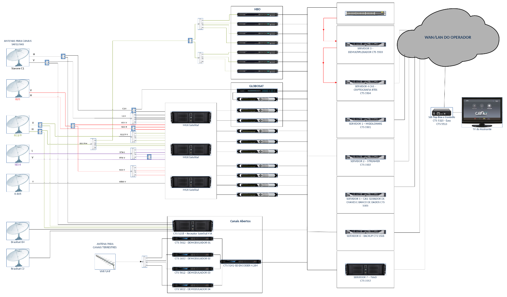
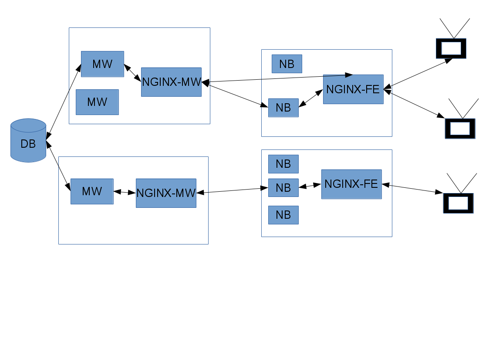
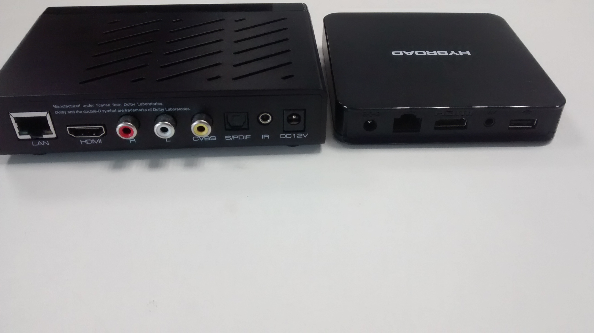

Agenda
========
- O que é o Kingrus?
- IPTV
- Kingrus - Componentes
- Headend
- Middleware
- Conteúdo
- SetTopBox
- Device Conectado
- UI (User Interface)
- Conectividade
- Middleware na internet
- Autenticação, autorização e identificação
- Exemplo: Controle remoto
- Possibilidades
- Sinais do STB para outros sistemas
- Sinais de outros para e TV
- Perguntas
O que é o Kingrus?
Sistema de TV por assinatura
Este sistema é fornecido para provedores de internet (ISP)
Utiliza IP (Rede de dados) para entrega de conteúdos e informações
TV sobre IP (IPTV)
O que é o IPTV?
Utiliza a infraestrutura de rede do provedor para transmitir (Rede local)
Quanto melhor a rede, melhor pode ser a qualidade
Não é TV via internet
Mas pode utizar a internet como meio de transmissão
Cada interação com as telas reflete algumas dezenas de troca de mensagens entre o STB e o middleware
Kingrus - Componentes
Headend
Multiplos servidores (Papéis)
Multiplos equipamentos
Receptores
Critografia
transcodificadores
Gravadores
...

Middleware
TUDO é armazenado em servidores
O que está passando em cada canal em que horário
Quem tem permissão de acesso
Controle parental
(volume, canal atual, audio, legenda de cada canal, ...)
Acesso ao conteúdo não linear.
TVoD (Acesso ao conteúdo gravado)
VoD (Vídeo sob demanda) Ex. Netflix
OTT (Over the top) ou Rede local
Simplificação do middleware

SetTopBox
É a caixa que vai na casa do assinante.

O que tem no SetTopBox
Entrada de dados
No caso do kingrus é um sistema com uma interface WEB (Browser)
Single Page Application
Conexão persistente (WebSockets) e conectividade total